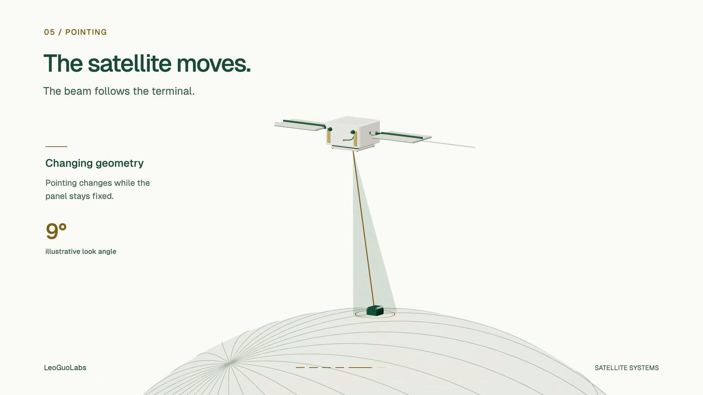

LEOGUOLABS / MOTION STUDY 02
Use ← and → to pause and move one frame. The number selects a target frame in the encoded MP4; the presentation timestamp below reports the frame delivered by the browser. For visual inspection, the original rendered stills are also included.
